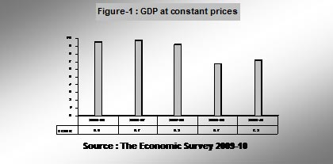
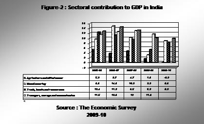
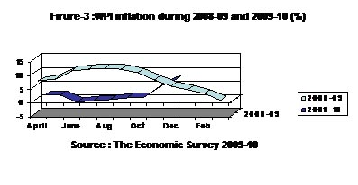

Our views on the Union Budget, published by Agarwal & Dhandhania. Back to all publications



While due care has been taken to ensure the accuracy of the information contained herein, no warranty, express or implied, is being made, by Agarwal & Dhandhania as regards the accuracy and adequacy of the information contained herein. The information in this material is not intended to constitute accounting, tax, legal, investment, consulting, or other professional advice or services. The information is not intended to be relied upon as the sole basis for any decision which may affect you or your business. Before making any decision or taking any action that might affect your personal finances or business, you should consult a qualified professional adviser. None of Agarwal & Dhandhania, its partners, analysts or staff shall be responsible for any loss whatsoever sustained by any person who relies on this material.
This material is intended only for the use of the clients and for the firm’s personnel only and the entity/person to whom it is addressed and the others authorized to receive it on their behalf. The recipient is strictly prohibited from further circulation of this material. If you have received this communication in error, please notify us immediately by responding to this email and then delete it from your system
This booklet is not an offer, invitation, advertisement or solicitation of any kind. It is purely intended for our clients and for private circulation only.
The Finance Minister presented the budget for 2010-11 when the fiscal 2009-10 is ending with a remarkable recovery and clear indications of vibrant economic rebound. He budgeted a lower fiscal deficit of 5.5 percent of GDP for the next fiscal, against the budget estimates of 6.8 percent for this fiscal and promised to lower it further to 4.8 percent and 4.1 percent over the next two years. This lower deficit is more due to expenditure compression, especially non plan expenditure with only a 6% increase (adjusted for inflation), which is hardly anything. He appears to be on a responsible fiscal policy path, which has greatly enthused foreign investors. This is the main reason why we saw the stock market shoot up after its all these regular proposals. It is happy to note that though fiscal 2009-10 began amid a sense of despondency, gloom and uncertainty but ending with sense of confidence. Following the impact of global financial crisis on Indian economy after 2007, thirteenth Finance Commission recommended a gradual and partial rollback of stimulus measures, which was expected to be resulted in hike in indirect taxes in the budget and that is what budget confirms.
The FM said in previous budget that tax reform is a process and not an event. Continuing the same, this budget, he has outlined the process by assuring roll out Direct Tax Code in direct taxation and GST in indirect taxation from April’ 2011. Proving this budget, as he said, belonging to “Aam Admi”, the farmers, the agriculturists, the entrepreneurs and the investors, he has proposed to broaden tax slabs for mid class (to benefit 60% of tax payers), to encourage R&D, to declare 46% of the plan allocation to infrastructure, to simplify FDI regime, to give additional banking licenses to private players/NBFC, to announce 5 more mega food parks, to double plan allocation for Power and further disinvestment.
The Finance Minister will have a challenging task as he deals with DTC & GST. Rising Inflation not much addressed, which will adversely affect assumed Fiscal Deficit. It remains to be seen the relative reliance placed on Direct and Indirect Taxes in order to sustain the economic growth and requiring relevance for large scale spending on social and educational sector.
He had the daunting task to quickly put the economy on the high GDP growth, contain inflation, ensure food security and bring down the fiscal deficit. For this, he has to impart fresh momentum into the economy; he did so with certain innovation and with a broad brush. The Finance Minister rightly quoted the following words of Kautilya ;
“Thus, a wise Collector General shall conduct the work of revenue collection…. in a manner that production and consumption should not be injuriously affected…. financial prosperity depends on public prosperity, abundance of harvest and prosperity of commerce among other things.”
Overall this budget aims to spur the growth with emphasis on welfare, women and child development, green revolution in some northern and eastern states, conservation of soil fertility and environment, non-conventional energy, dry land agriculture, water harvesting and watersheds. It is a growth-oriented, rural-development budget. It sustains growth and brings about a measured fiscal consolidation.
It has always been endeavor of Agarwal & Dhandhania to provide you with timely updates on economic and legal initiatives and developments affecting Trade and Industry. The Union Budget is one such statement of Economic Policies pursued by the Government.
For the last couple of years, we make all-out efforts in compiling and analysing Budget Proposals for providing its panoramic view to our Readers within 24 hours of its presentation by The Finance Minister in Parliament.
We trust, you shall find this Booklet very useful for reference and record. We welcome your valued Inputs for our continual improvements.
We wish a great and successful fiscal 2010-11 to you.
Email us your feedback and queries at : (sanjay@adcaindia.com)
Defying all the apprehensions Economic Pundits predicted in April’2009, the year 2009-10, as a whole, has posted a remarkable recovery not only in terms of overall economic growth figures but in terms of fundamentals also. Outlooks at the start and at the end are totally different. The pre-budget Economic Survey (2009-10), presented by The Finance Minister Pranab Mukherjee in Parliament on Thursday predicted that India would bounce back to a high nine per cent growth in 2011-12 and possibly will become world's fastest growing economy in just four years.
The survey warned that high food prices would rise further over next few months and it has held the food management policies responsible for the high prices of items like sugar. Food inflation is at present hovering close to 18 per cent. The Economic Survey 2009-10 recommended a “gradual rollback” of stimulus measures after carefully assessing its impact on each sector.
Auction for 3G spectrum to provide existing and foreign players to bring in new technology and innovations.
India world's 2nd largest wireless network with 525.1 million mobile users
Gas output up 52.8 per cent to 50.2 billion cubic meters with RIL starting production
Trade gap narrowed to $76.24 bn in April-December.
Exports in April-December 2009 down 20.3 per cent
Imports in April-December 2009 down 23.6 per cent
Overall approach is to foster “inclusive and green growth promoting fiscal federalism”
FRBM Act needs to specify the nature of shocks that would require relaxation of the targets
Commission recommends increase in states' share to 32 per cent of Central tax proceeds from the current level of 30.5 per cent.
Finance Commission has asked the government to adopt a “calibrated” strategy for withdrawing stimulus
India’s GDP growth at 7.2 % in 2009-10
Industrial sector growth seen at 8.2%
Service sector growth seen at 8.7 %
GDP expected to grow around 8.5%
Year 2007 witnessed beginning of financial crisis in the industrialized nations, which spread to the real economy across the world. It was further followed by a significant slowdown in the growth rate in the second half of 2008-09. The growth rate of the gross domestic product (GDP) in 2008-09 was 6.7 per cent, with growth in the last two quarters hovering around 6 per cent. The fiscal year 2009-10 began as a difficult one. Inevitably, India’s fiscal deficit increased from the end of 2007-08, reaching 6.8 per cent (budget estimate, BE) of GDP in 2009-10. A variety of stimulus packages were put in place in the second half of 2008-09, in the Interim Budget 2009-2010 and, again, three months later, in the main Budget 2009-2010. A delayed and severely subnormal monsoon added to the overall uncertainty. The continued recession in the developed world, for the better part of 2009-10, meant a sluggish export recovery and a slowdown in financial flows into the economy.
However the real turnaround came in the second quarter of 2009-10 when the economy grew by 7.9 per cent. As per the advance estimates of GDP for 2009-10, released by the Central Statistical Organization (CSO), the economy is expected to grow at 7.2 per cent in 2009-10, with the industrial and the service sectors growing at 8.2 and 8.7 per cent respectively. This recovery is impressive because of the following reasons.
Agriculture output was decreased by 0.2 % due to sub normal monsoons during the year.
Manufacturing growth seen continuous decline in the growth rate for almost eight quarters since 2007-08. This year, manufacturing growth has more than doubled from 3.2 % in 2008-09 to 8.9 % in 2009-10.
After a significant fall in the growth rate of gross fixed capital formation in 2008-09, there has been a good recovery in 2009-10.
After a decline nearly twelve continuous months, there has been a turnaround in merchandise export growth in November 2009, which has been sustained in December 2009.
At the year’s end, it is good to see India having averted a recession and come out of the slowdown faster than predicted and an analysis of various statistical trends that gird the economy suggests that the nation’s medium- and long-term prognosis is excellent. If we can put into effect some important structural policy measures, there is no reason why India cannot achieve double-digit gross domestic product (GDP) growth and a rapid diminution of poverty. The growth rate of India for last 5 years is depicted in figure -1.
Total food grains production in 2008-09 was estimated at 233.88 million tonnes as against 230.78 million tonnes in 2007-08 and 217.28 million tones in 2006-07. In the agricultural season 2009-10, the impact of the delayed and sub-normal monsoon is reflected in the production and acreage data for kharif crops. Total production of kharif pulses is estimated at 4.42 million tonnes in 2009-10, which is 8 per cent lower than the production during 2008-09 and 32 per cent lower than the targeted production for 2009-10. Similarly, total kharif production of the nine oilseeds in 2009-10 is about 15 per cent lower than the kharif production in 2008-09.
The manufacturing sector has grown at the rate of 8.9 per cent in 2009-10. Growth in the major industrial groups has been a mixed bag. There was strong growth in automobiles, rubber and plastic products, wool and silk textiles, wood products, chemicals and miscellaneous manufacturing; modest growth in nonmetallic mineral products; no growth in paper, leather, food and jute textiles; and a slump in beverages and tobacco products in 2009-10.
The service sector which has been India’s workhorse for well over a decade has continued to grow rapidly. It comprises the sub-sectors trade, hotels, transport and communications; financing, insurance, real estate and business services; and community, social and personal services. As against a growth of 9.8 per cent in 2008-09 it grew at 8.7 per cent in 2009- 10.
Contribution of various sectors in GDP of India is depicted in Figure-2.
The year-on-year WPI inflation rate has been fairly volatile in 2009-10. It was 1.2 per cent in March 2009 and then declined continuously to become negative during June-August 2009, assisted in part by the large statistical base effect from the previous year. It turned positive in September 2009 and accelerated to 4.8 per cent in November 2009 and further to 7.3 per cent in December 2009. For the fiscal year so far (March over December 2009) WPI inflation is estimated at 8 per cent.
Month wise WPI inflation during 2008-09 and 2009-10 is given in Figure-3.
Given the uncertain global context, the Government did not fix an export target for 2009-10, instead the Foreign Trade Policy (FTP) 2009-14 set the objective of an annual export growth of 15 per cent with an export target of US$ 200 billion by March 2011. With the deepening of the global recession, the beginning of 2009-10 saw acceleration in the fall of export growth rate. The upwardly revised export figures for the first half of 2008-09 also contributed to the faster decline in the growth rate. While the export growth rate was a negative 22.3 per cent in April-November 2008-09, in November 2009, it became a positive 18.2 per cent after a 13-month period of negative growth.
The agriculture services sector attracted FDI of Rs. 6327 Cr during the first eight months of the current fiscal against Rs. 16 Cr in the year ago period. FDI in the Sea Transport sector was up by 918% to Rs. 12983 Cr, while in the electrical equipment segment inflows increased by 202% to Rs. 2724 Cr during April – November 2009-10.
Total FDI during the period was Rs. 93354 Cr, signifying a growth of 9% from Rs. 85700 Cr on the year 2008-09.
In fiscal 2009-10, with the signs of recovery and return of FII flows after March 2009, the rupee has been strengthening against the US dollar. The movement of the exchange rate in the year 2009-10 indicated that the average monthly exchange rate of the rupee against the US dollar appreciated by 9.9 per cent from Rs 51.23 per US dollar in March 2009 to Rs 46.63 per US dollar in December 2009, mainly on account of weakening of the US dollar in the international market.
Tax rates for Individual(s), HUF, AOP, BOI and artificial judicial person broadened.
Tax rate of corporate tax remain unchanged for both domestic and foreign companies.
In addition to the existing limit of Rs. 1 lakh on tax savings u/s 80C-80CCC- 80CCD, additional deduction of Rs. 20,000 allowed u/s 80CCF by investment in long term infrastructure bonds as notified by the Central Government. Minimum Alternate Tax (MAT) rate increased from the current rate of 15% to 18% of book profits.
TDS deducted on payment by way of any expense and paid before the due date of filing the return be allowed for deduction.
Interest charges on TDS but not deposited by the specified date to be increased from 12% to 18% per annum
Service tax rate remains unchanged at 10.30% (including cess)
Direct Tax Code and GST proposed to be effective from April, 2011.
Standard rate of Central Excise duties on all non-petroleum products enhanced from 8% to 10% ad valorem.
Central Excise duty on petrol and diesel enhanced by Re.1 per litre each.
Small scale manufacturers permitted to take full credit of Central Excise duty paid on capital goods in a single installment in the year of their receipt.
Due to new Govt. stimulus Package
The tax slabs are proposed to be broadened to benefit not less than 60% of the tax payers. The major benefit goes to the middle class people. The budget says a loss of revenue would be Rs. 26000 cr by this move. Additional amount of Rs. 20000 made available for deduction, increasing TDS limits in various payments, promoting hotels/tourism, increasing benefits to pay for research & development and clarifying provisions for LLP are some major reforms in direct tax proposals.
No surcharge shall be levied in case of persons mentioned above.
30% of the total income plus 7.5% surcharges on tax payable if total income exceeds Rupees One Crore.
40% of the Total Income plus 2.5% surcharges on tax payable if total income exceeds Rupees One Crore.
Net Taxable Income post sec. 80C
“The advancement of any other object of general public utility” is not a charitable purpose if it involves carrying on of any activity in the nature of trade, commerce or business or any activity of rendering of any services in relation to any trade, commerce or business, for a cess or fee or any other consideration, irrespective of the nature of use or application, or retention, of the income from such activity.
” The advancement of any other object of general public utility” shall also be a charitable purpose if the total receipts from any activity in the nature of trade, commerce or business or any activity of rendering of any services in relation to any trade, commerce or business do not exceed Rs. 10 lakhs in the previous year.
Non resident now taxable for certain receipts even for rendering services outside India
Currently income of a non resident by way of interest, royalty and fees for technical services (payable by Government or a resident or by non resident for India) shall be deemed to accrue or arise in India and shall be included in his total income. This is Irrespective of the fact that whether he has residence or place of business or business connection in India or not.
The provision remains the same except the addition in irrespective fact that whether the non resident has rendered the services in India or not.
For tax exemption, Scientific research includes research in social science or statistical research
The income of a scientific research association (for the time being approved for the purpose of section 35 (1) (ii)) is exempt from tax.
With this amendment, it is applicable to those research associations also, which undertake research in social science or statistical research.
Word “Undertaking” to substitute word “assessee” in SEZ profit exemption now retrospectively from 1st April 2006
Regarding profit exemption of SEZ, the word “Undertaking” is substituting the word “assessee” w.e.f. 01.04.2010.
With this amendment, now this substitution will be effective from 1st April 2006.
If the activities of the trust are found to be non genuine, the registration granted u/s 12AA can be cancelled by the Commissioner after providing the trust an opportunity of being heard.
With this amendment, now the Commissioner can cancel trust registered u/s 12A also for the same non genuine activities. Earlier it only applicable for trust registered u/s 12 AA.
Weighted deduction increased from 125% to 175% for sums paid for scientific R&D (now includes social & statistical research too)
A weighted deduction from the business income of 125% of any sum paid to an approved scientific research association or an approved University, college or other institution to be used for scientific research is allowed.
With this amendment, the weight is increased from 125% to 175% and it is also made applicable to a research association which has as its object, undertaking research in social science or statistical research, provided such research association is approved and notified.
Weighted deduction increased from 125% to 175% for sums paid for scientific research programme
Weighted Deduction of 125% is allowed for any sum paid to a National Laboratory or a University or an Indian Institute of Technology (IIT) or a specified person for approved scientific research programme.
With this amendment, the weight is increased from 125% to 175%.
Weighted deduction increased from 125% to 175% for sums paid for In house scientific R&D
A company is allowed a weighted deduction of 150% of the expenditure (not being expenditure in the nature of cost of any land or building) incurred on scientific research or an approved in – house research and development facility.
With this amendment, the weight is increased from 150% to 200%.
Currently for Investment Linked Deduction, “Specified Business” means the business of setting up and operating cold chain facilities, warehousing facilities for storage of agricultural produce and laying and operating a cross country natural gas or crude or petroleum oil pipeline network.
It is now proposed to include the business of building and operating a new hotel of two-star or above category, which starts functioning after 01.04.2010 within the purview of specified business
Profit Linked deduction under chapter VI A now extended to Hotel sector too.
Benefits of profit linked deduction under Chapter VI-A are available to specified hotels in Uttrakhand and Himachal Pradesh, national capital territory and adjacent districts; 22 districts having World Heritage Sites and North Eastern states
It is proposed to provide investment linked incentive to the hotel sector irrespective of location.
Pipe line capacity for common carrier to be as per regulations of Petroleum and Natural Gas Regulatory Board.
In case of laying and operating a cross country pipeline network, the specified business has made not less than one third of its total pipeline capacity available for use on common carrier basis, to avail the deduction.
It is proposed that the proportion of total pipeline capacity to be made available for use on common carrier basis should be specified as per the regulations of Petroleum and Natural Gas Regulatory Board.
In respect of amount paid for voluntary retirement, one fifth of amount paid shall be deducted in previous year and balance shall be deducted in equal installments in four immediately succeeding previous years.
It is proposed to provide that in case of succession of a private company or unlisted public company by a limited liability partnership, the provisions shall apply to successor as they would have applied to predecessor.
Expenditure is not allowed, if TDS is deducted during first eleven months and not paid during the previous year. TDS deducted during the last month of the year can be deposited on or before the due date of filing of return.
It is proposed to provide that TDS deducted any time during the year can be deposited till the date of filing of the return to claim the expenditure.
When the assets has been claimed as deduction U/s 35 AD and then is acquired by way of gift, will, irrevocable trust, on any distribution/liquidation of any company and by transfer as referred in clauses (i), (iv), (v), (vi), (vib), (xiii) , (xiv) of Section 47, the actual cost of asset shall be taken as ‘NIL’ for the purpose of claim U/s 35 AD.
Clause (xiiib) of Section 47 has been inserted in the said Explanation which provide that in case of succession of private company or unlisted public company by a LLP, the actual cost which has been claimed as deduction u/s 35 AD by the predecessor company shall be taken as ‘NIL’ in case of the successor LLP.
1st April, 2011(i.e. A.Y. 2011-12)
For converted LLP, actual cost of block of assets is “WDV” of predecessor
In case of succession of private company or unlisted public company by a LLP, the actual cost of the block of assets in case of successor LLP shall be the WDV of the block of assets of Predecessor Company on the date of conversion.
An adjustment shall be made by way of deduction in respect of any amount either written off or provided in the accounts to meet diminution on realization of investment or adjustment shall be made by way of increase in respect of any amount taken credit for on account of appreciation on realisation of investments.
It is proposed to provide that any gain or loss on realization of investments shall be added or deducted, as the case may be, if such gain or loss is not debited to the P/L A/c and any provision for diminution in the value of investment debited to the P/L A/c shall be added back.
1st April, 2010 (i.e. A.Y. 2011-12)
Tax Audit limits raised to Rs. 60.00 lacs and Rs. 15.00 lacs for business and profession respectively
It is obligatory for every person to get his accounts audited, If the turnover or gross receipts exceeds Rs. 40 lacs in case of person carrying on business or Rs. 10 lacs in case of person carrying on profession in the previous year.
It is proposed to enhance the limit of Rs. 40 lacs and Rs. 10 lacs to Rs. 60 lacs and Rs. 15 lacs respectively.
Limits raised to Rs. 60.00 lacs for presumptive business except business of plying, hiring or leasing goods carriages
Except the business of plying, hiring or leasing goods carriages, in case of all other businesses covered under the provisions of presumptive profits (i.e. civil construction, retails business etc.) whose total turnover or gross receipts does not exceed Rs. 40 lacs in previous year, their profit is taken on presumptive basis.
It is proposed to enhance this limit to Rs. 60 lacs from existing Rs. 40 lacs.
Computation of profits and gains of business of exploration etc. Of mineral oils
Section 44 BB says that Income of a non- resident assessee who provides services or facilities for supplying plant and machinery for exploration will be 10% of the amount paid or payable whether in or out of India for such services or facilities. The proviso to this section says that it will not be applicable where the provisions of sections 42, 44D, 115A or 293A apply.
As per proposed amendment in the proviso, the said section will also not be applicable where the provisions of section 44AD become applicable.
Computation of income by way of royalty etc. In case of non-resident
Newly inserted Proviso. However the section 44DA provides the procedure for computation of income from royalty or fees for technical services connected to permanent establishment of the non resident in India through which business is carried out in India.
As amended the provisions of section 44BB (i.e. Computation of Profit and gains from the business of exploration of mineral oil) the said section will not apply in respect of income referred to in section 44DA.
47(xiiib), its proviso and 47A(4)
Any transfer of a capital asset or intangible asset by a company shall not be treated as transfer u/s 45 where a private company or unlisted public company is converted into a LLP in accordance with the provisions of section 56 or 57 of the LLP Act, 2008
All the assets and liabilities will be transferred to LLP.
All shareholders will become partners in LLP and their capital contribution & PSR are in same proportion as their shareholding in the company on the date of conversion.
No consideration other than profit and capital contribution in LLP to partnrers.
The aggregate of PSR of share holders shall not be less than 50% at any time during 5 years from the date of conversion.
The total sales, receipts etc. does not exceed 60 Rs. lacs in any of three previous years preceding the year of conversion.
No amount is paid to any partner out of accumulated profit as on the date of conversion for 3 years from conversion.
any of the condition in proviso to section 47(xiiib) (Refer Pt. 7) are not fulfilled the amount of profits or gains from transfer of capital assets or intangible assets by the predecessor private company or unlisted public company to the successor LLP shall be deemed to be the profits or gains chargeable to tax of the LLP in the previous year when the conditions are not fulfilledW.E.F.1st April, 2011(i.e. A.Y. 2011-12)
The cost of acquisition of the assets shall be deemed to be the cost for which the previous owner acquired it.
It is proposed to make a reference of section 47(xiiib) in the said sub clause. It provides that the cost of acquisition of the capital asset for the successor LLP shall be deemed to be the cost for which the predecessor company has acquired it.
If an assessee being an individual or a HUF receives any immovable property without consideration or for inadequate consideration, the value of the said property shall be treated as income in the hands of the assessee and shall be taxable.
As proposed it would apply only if the immovable property is received without any consideration and to remove the stipulation as regards inadequate consideration.
Retrospectively from 1st Oct, 2009 (A.Y. 2010-2011)
Where a firm or a company not being a company in which public are substantially interested receives any property being shares of a company not being a company in which the public are substantially interested on or after 1st day of June, 2010 without consideration, the aggregate FMV of which exceeds Rs. 50000, the whole aggregate of such FMV or for a consideration which is less than the aggregate FMV of the property by an amount exceeding Rs.50000, the aggregate FMV of such property as exceeds such consideration shall be treated as income. This will not apply for the transaction not regarded as transfer.
1st June, 2010(i.e. A.Y. 2011-2012)
Carry forward & set off of accumulated loss & unabsorbed depreciation to Converted LLP
This sub section is newly inserted.
In case, a private company or unlisted public company is converted in to a Limited liability partnership fulfilling conditions of Section 47(xiiib), the accumulated loss and the unabsorbed depreciation of the company shall be deemed to be the loss, allowance for depreciation of the successor LLP for the previous year in which the business organization was effected & other provisions of the act relating to set off & carry forward loss &allowance for depreciation shall apply accordingly.
“Accumulated loss” allowable to converted LLP also
Accumulated loss means so much of the loss of the predecessor firm or the proprietary concern or the amalgamating company or the demerged company, as the case may be , under the head “Profits and gains of Business and Profession “ (not being a loss sustained in a speculation business) which such predecessor firm or the proprietary concern or amalgamating company or demerged company, would have been entitled to carry forward & set off under the provisions of Section 72 if the reorganization of the business or amalgamation or demerger had not taken place.
The above provision will be also be applicable to a Limited Liability Partnership (LLP) converted from a firm or the proprietary concern or the private company or unlisted public company in the same manner as given above.
“Unabsorbed depreciation” allowable to converted LLP also
It means so much of the allowance for depreciation of the predecessor firm or the proprietary concern or the amalgamating company or the demerged company, as the case may be, which remains to be allowed and which would have been allowed to the predecessor firm or the proprietary concern or amalgamating company or demerged company, as the case may be, under the provisions of the act, if the reorganization of business or amalgamation or demerger had not taken place.
The section has been newly inserted.
This section is for entities carrying on “Specified Business”, which means the business of setting up and operating cold chain facilities, warehousing facilities for storage of agricultural produce, laying and operating a cross country natural gas or crude or petroleum oil pipeline network and the business of building and operating a new hotel of two-star or above category, which starts functioning after 01.04.2010.
No deduction shall be allowed under the provisions of section 35AD, where a deduction under this section of Chapter VI-A has been claimed and allowed
Additional Rs. 20000 deduction by investing in long term infrastructure bonds
Currently only Rs. 1.00 lac is available for investments in the form of section 80 C. To boost savings and promoting investment in infrastructure, this new section has been inserted.
A maximum subscription of Rs. 20,000/- in long term infrastructure bonds (as notified by central government) will be deductible from total income of Individual and HUF in addition to the overall limit of Rs. one Lakh.
Under the existing provisions of the section, deduction in respect of premium paid towards health insurance policy upto maximum Rs.15000/- is available for self, spouse and dependent children.
It has been proposed to further allow deduction in respect of any contribution made to the Central Government Health Scheme (CGHS) within the said limit. CGHS is a medical facility available to serving and retired government servants.
Deduction in respect of certain donations for scientific research or rural development
As per the existing provisions, any donation made to a university, college or other institution to be used for research in social science or statistical research qualify for deduction under the section, provided such university, college or institution is approved for the purpose of Sec 35(1)(iii).
As per the proposed amendment, in addition to the above, any donation made to a research association which has its object of undertaking of research in social science or statistical research and which for the time being is approved for the purposes of the said section is also deductible.
Time Limit increased and commercial area reduced for Housing projects to avail tax benefit
Under the existing provisions, a 100% deduction is available in respect of profits derived by an undertaking from developing and building housing projects approved by a local authority before 31.03.2008. The benefit is available subject to:
the project has to be completed within 4 years from the end of the financial year in which the project is approved by the local authority.
the built-up area of the shops and other commercial establishments included in the housing project should not exceed 5% of the total built-up area of the housing project or 2000 sq. ft. whichever is less.
to increase the period allowed for completion of a housing project in order to qualify for availing the tax benefit under the section from existing 4 years to 5 yeas from the end of financial year in which the housing project is approved by the local authority. This extension will be available for housing projects approved on or after 01.04.2005.
to enhance basic facilities for residents, the built-up area of shops and other commercial establishments is proposed to be reduced from 5% to 3% of the total built-up area of the housing project or 5000 sq. ft. whichever is higher.
Retrospectively from 01.04.2010(A.Y. 2010-2011)
Time limit extended by 4 months to complete Hotel or Convention Centre to avail tax benefit
The existing section provides for 100% deduction for 5 years, of profits derived by an undertaking from business of a two-star, three-star or four-star category hotel or from the business of building, owing and operating a convention centre located in the specified area, provided such hotel has started functioning or such convention centre is constructed during the period 01.01.2007 to 31.03.2010.
It is proposed to extend the said period up to 31.07.2010.
A company is required to pay a Minimum Alternate Tax (MAT) on its book profit @ 15%, if the income-tax payable on the total income, as computed under the Act in respect of any previous year is less than such minimum.
Increase of rate of MAT from 15% to 18%.
The amount of MAT paid u/s 115JB is allowed to be carried forward and set off against tax payable up to 10th assessment year.
If a Private Company or Unlisted Public Company is converted in to Limited Liability Partnership (LLP) under the LLP Act, 2008, credit of MAT paid by the company shall not be allowed to the converted LLP.
TDS limit on winnings from lottery/Crossword puzzles raised from Rs. 5000 to Rs. 10000
Any person responsible for paying to any person any income by way of winnings from any lottery or crossword puzzles or card games and other game of any sort in excess of Rs. 5,000 is required to deduct income tax on such payment at the rate in force.
It is proposed to enhance the said limit from Rs.5,000 to Rs. 10,000
TDS limit on winnings from horse race raised from Rs. 2500 to Rs. 5000
A bookmaker or a licensee for horse racing in any race course or for arranging any wagering or betting in any race course, who is responsible for paying to any person any income by way of winnings from any horse race in excess of Rs. 2500 is required to deduct TDS on such payments at the rates in force
It is proposed to enhance the said limit from Rs.2,500 to Rs. 5,000
TDS limit on payment to Contractors raised from Rs. 20000 to Rs. 30000 and from Rs. 50000 to Rs. 75000
No TDS is to be deducted if any amount credited or paid or likely to be credited or paid to the contractor if amount of single transaction does not exceed Rs. 20,000 or if aggregate of such sum does not exceeds Rs. 50,000
It is proposed to enhance the said limit of Rs. 20,000 to Rs. 30,000 and of Rs. 50,000 to Rs. 75,000.
TDS limit on Insurance Commission raised from Rs. 5000 to Rs. 20000
No deduction of income tax shall be made in case where remuneration or reward in the form of Insurance Commission or otherwise is paid or credited to the payee does not exceed Rs.5000
It is proposed to enhanced the said limit from Rs.5,000 to Rs. 20,000
TDS limit on Commission or Brokerage raised from Rs. 2500 to Rs. 5000
No deduction of income tax shall be made in case where the income in the form of Commission or Brokerage credited or paid to the account of Payee does not exceed Rs. 2500
It is proposed to enhanced the said limit from Rs. 2500 to Rs. 5000
TDS limit on Rent raised from Rs. 120000 to Rs. 180000
No deduction of income tax shall be made in case where the income in the form of Rent credited or paid to the account of Payee does not exceed Rs. 1,20,000
It is proposed to enhance the limit from Rs. 1,20,000 to Rs. 1,80,000
TDS limit on Fees for Professional or Technical Service raised from Rs. 20000 to Rs. 30000
No deduction of income tax shall be made from such sum or the aggregate of such sums relating to professional or technical fees or royalty paid or credited to the accounts of payee does not exceed Rs. 20,000
It is proposed to enhance the said limit from Rs.20,000 to Rs. 30,000
Interest rate for late payment of TDS increased from 1% to 1.5% pm
Any person, principal officer and the company responsible for tax deduction on income are liable to pay simple interest at 1% for every month or part of a month on amount of tax from the date on which such tax was deductible to the date of on which such tax is actually paid if they fail to deduct or after deduction fail to pay to the account of The Central Government
It is proposed to enhance the interest rate from 1% to 1.5% per month or part of month.
As per provision, “Case” means any proceedings for assessment of any previous year which is pending before an Assessing Officer under section 143(3)/ 144 on the date on which an application is made to Settlement Commission u/s 245C. Proceeding of assessment or reassessment for any of the assessment years under section 153A(1)(b)relates to assessment in case of Search and 153B (1)(b) relates to the time limit for completion of Assessment under section 153A of person referred under section 153A and 153C are not regarded as case to be referred to Settlement Commission.
Proceeding of assessment or reassessment referred under section 153A(1)(b) and 153(1)(b) of person referred under section 153A and 153C are included under the definition of Case referred to Settlement Commission
Where tax has been deducted or paid in accordance with the provisions of Chapter XVII i.e. collection & recovery of tax on or after 1st April 2010, there is no requirement to furnish a certificate, by the deductor to the deductee & by the employer to the employee.
As per first proviso to section 206C (5), in case of business of trading in Alcoholic liquor, Forest produce, Scrap etc, where the tax has been collected by the seller from the buyer, no certificate is required to be furnished.
Application to Settlement Commission only when the additional tax exceeds Rs. 50 lacs
An assessee can make an application before the Settlement Commission, if the additional amount of income-tax payable on the income disclosed in the application exceeds Rs. 3 lacs
It is proposed that limit has been increased from 3 lacs to 50 lacs , in cases where proceedings for assessment or reassessment have been initiated as a result of search u/s 132 or books of a/c, other documents or any assets requisitioned u/s 132A & in other cases limit has been increased to Rs. 10 lacs
1st June, 2010 (i.e. A.Y. 2011-2012)
Order by Settlement Commission now in 18 months for applications made after 1st June 2010
Settlement commission shall pass an order, in respect of an application made on or after 1st June 2007 within 12 months from the end of the month in which application was made.
It is proposed to amend clause (ii) in respect of an application made on or after 1st June, 2007 but before 1st June, 2010 should pass an order within the said period of 12 months & clause (iii) has been inserted, in respect of an application made on or after 1st June, 2010 limit is increased from 12 months to 18 months.
1st June ,2010 (i.e. A.Y. 2011-2012)
The High Court may admit application against refusal by tribunal even after 6 months, if satisfied with the cause
In 256(2), the case where the Income-tax Appellate Tribunal refuses to refer a case to High Court on the ground that no question of law arises, the Assessee or the Commissioner were allowed to file an appeal before the High court against such refusal of the Tribunal within a period of six months from the date on which he was served with an order of refusal.
It is proposed to retrospectively insert sub-section (2A) so as to empower the High Court to admit an application after the expiry of 6 months, if it is satisfied that there was sufficient cause for not filing within such period.
The High Court may admit appeal against Appellate Tribunal Order even after 120 days, if satisfied with the cause
The Commissioner or an assessee aggrieved by any order passed by the Appellate Tribunal may file an appeal to the High Court within 120 Days from the date on which the order appealed against is received by the Commissioner or the Assessee.
It is proposed to insert a new sub-section (2A) so as to empower the High Court to admit an appeal after the expiry of 120 days if it is satisfied that there was sufficient cause for not filing the appeal
Retrospectively from 1st Oct, 1998 (A.Y. 1999-2000)
Penalty now may go up to Rs. 1.50 lacs for failure to get accounts audited
If any person fails to get his accounts audited in respect of any previous year relevant to an A.Y. or furnish a report of such audit as required u/s 44AB, the AO may impose a penalty equal to 0.5% of the total sales, turnover or gross receipts, as the case may be, in business or of the gross receipts in profession, in such P.Y. or a sum of Rupees 1 lacs whichever is less
The limit has increased from Rs.1 lacs to Rs.1.5 lacs
1st April, 2011 (i.e. A.Y. 2011-2012)
IT authority is required to allot DIN before issue of every notice, order, letter or any correspondence to any other IT authority or to assessee or any other person and such number shall be quoted thereon for any correspondence & the same should not be accepted without DIN.
1st October, 2010 (i.e. A.Y. 2011-2012)
[grve_title title=”Indirect Tax Proposals” heading=”h4″ el_class=”cms-sub-title”]
Value limit of Rs. 1 lakh per annum on duty-free import of commercial samples as personal baggage enhanced to Rs. 3 lakh per annum.
Provide project import status at a concessional customs duty of 5 per cent with full exemption from service tax to the initial setting up and expansion of Cold storage, cold room including farm pre-coolers for preservation or storage of agriculture and related sectors produce; and Processing units for such produce.
Provide concessional customs duty of 5 per cent to specified agricultural machinery not manufactured in India;
Concessional import duty to specified machinery for use in the plantation sector to be, extended up to March 31, 2011 along with a CVD exemption.
Import of compostable polymer exempted from basic customs duty.
Provide project import status at a concessional customs duty of 5 per cent with full exemption from special additional duty to the initial setting up “Digital Head End” equipment by multi-service operators.
Full exemption from import duty available to specified inputs or raw materials required for the manufacture of sports goods expanded to cover a few more items.
Basic customs duty on one of key components in production of micro-wave ovens, namely magnetrons, reduced from 10 per cent to 5 per cent.
Outright exemption from special additional duty provided to goods imported in a pre-packaged form for retail sale. This would also cover mobile phones, watches and ready-made garments even when they are not imported in pre-packaged form. The refund-based exemption is also being retained for cases not covered by the new dispensation.
Rationalisation of customs duty on gaming software.
Provide a concessional customs duty of 5 per cent to machinery, instruments, equipment and appliances etc. required for the initial setting up of photovoltaic and solar thermal power generating units and also exempt them from Central Excise duty. Ground source heat pumps used to tap geo-thermal energy to be exempted from basic customs duty and special additional duty.
Customs duty on Motor Spirit (petrol) and HSD (diesel) increased from 2.5% to 7.5%.
Customs duty on some other specified petroleum products is being increased from 5% to 10%.
Customs duty on serially numbered gold bars (other than tola bars) and gold coins is being increased from Rs.200 per 10 gram to Rs.300 per 10 gram.
Customs duty on other forms of gold is being increased from Rs.500 per 10 gram to Rs.750 per 10 gram.
Customs duty on silver is being increased from Rs.1000 per kg to Rs.1500 per kg.
Customs duty on platinum is being increased from Rs.200 per 10 gram to s.300 per 10 gram. The above change in rates would also be applicable when gold, silver and platinum (including ornaments) are imported as personal baggage.
ADDITIONAL DUTY OF CUSTOMS OF 4 % (SPECIAL CVD)Goods imported in pre-packaged form and intended for retail sale and certain specified goods namely, ready-made garments, mobile phones and watches are being provided an outright exemption from additional duty of customs of 4%. In addition, outright exemption from this duty is also being provided to Carbon Black Feedstock, waste paper and paper scrap. The existing exemption by way of refund would continue on other items.
Imports for initial setting up or substantial expansion of, a cold storage, cold room (including farm pre-coolers) for preservation or storage or an industrial unit for processing of agricultural, apiary, horticultural, dairy, poultry, aquatic & marine produce and meat. These projects would attract concessional rate of basic customs duty of 5%.
Imports for installation of Mechanized Handling Systems & Pallet Racking Systems, in mandis or warehouses for food grains and sugar, with concessional rate of basic customs duty of 5%. Such systems are also being exempted from additional duty of customs (CVD) and special additional duty of customs.
Truck Refrigeration units for the manufacture of refrigerated vans/trucks are being fully exempted from basic customs duty. Such units are already exempt from excise duty.
Basic customs duty is being reduced from 7.5% to 5% on specified agricultural machinery such as paddy transplanter, laser land leveler, cotton picker, reaper-cum-binder, straw or fodder balers, sugarcane harvesters, track used for manufacture of track-type combine harvester etc.
Basic customs duty on long pepper is being reduced from 70% to 30%.
Basic customs duty on ‘asafoetida’ (heeng) is being reduced from 30% to 20%.
) Full exemption from basic customs duty is being provided to bio-polymer/bio-plastics (HS Code 39139090) used for manufacture of bio-degradable agro mulching films, nursery plantation & flower pots.
Mono Rail Projects for urban transport are being granted project imports status under Heading No. 98 01 and would accordingly attract concessional rate of 5% basic customs duty.
Tunnel Boring machine for hydro-electric power projects is being fully exempted from basic customs duty with Nil CVD.
Concessional rate of customs duty of 5% presently available upto 06.07.2010 on specified machinery tea, coffee and rubber plantation is being extended upto 31.03.2011. Excise duty exemption is also being re-introduced on these items upto 31.03.2011.
Specified road construction machinery items are presently fully exempt from customs duty subject to specified conditions. Sale or disposal of such machinery items at depreciated value is being allowed on payment of customs duties on depreciated value at the rates applicable at the time of import subject to specified conditions.
Full exemption from basic customs duty and special additional duty of customs is being extended to specified parts namely, batteries including battery chargers, electric motors and AC or DC motor controllers imported for manufacturing all categories of electrical vehicles including cars, two wheelers and three wheelers (like Soleckshaw). These parts will attract CVD of 4%. The concession is subject to actual user condition. This concession will be available till 31.03.2013.
A concessional rate of basic customs duty of 5% is being provided to machinery items, instruments, appliances required for initial setting up of solar power generation projects or facilities. These items have been exempted from CVD also by way of excise duty exemption provided to them.
Ground source heat pump (for geo-thermal energy applications) is being fully exempted from basic customs duty and special additional duty of customs.
At present, medical equipments attract varying rates of customs duty and are spread over many lists.This multiplicity of rates is being done away with and now all medical equipments (with some exceptions) will attract 5% basic customs duty, 4% CVD/excise duty and Nil special additional duty of customs [i.e. effective duty of 9.2%].
Parts required for the manufacture and accessories of medical equipment will also attract 5% concessional basic customs duty with Nil special CVD.
Concessional customs duty available to spares for the maintenance of medical equipment is being withdrawn except in specified cases.
Full exemption from basic customs duty and CVD/excise duty is being retained for specified medical devices (exempt by description) as well as for assistive devices, rehabilitation aids and other goods for disabled (List 41).
Cobalt-chrome alloys, special grade stainless steel etc. for the manufacture of orthopaedic implants are being exempted from basic customs duty subject to actual user condition.
Battery chargers and hands-free headphones are the basic accessories of mobile phones. Full exemption from basic customs duty and CVD presently available for parts, components, accessories for manufacturing of mobile handsets including cellular phones and parts thereof is being extended to parts for the manufacture of battery chargers and hands-free headphones also.
Full exemption from 4% special additional duty of customs presently available upto 06.07.2010 on parts, components and accessories for manufacture of mobile handsets including cellular phones, parts thereof (except accessories) is being extended to parts of two specified accessories also upto 31.03.2011.
Basic customs duty is being reduced from 10% to 5% on magnetrons of upto 1,000 kw for the manufacture of microwave ovens.
Full exemption from customs duty is being extended to additional specified capital goods and raw materials for the manufacture of electronic hardware.
Films for exhibition are imported on cinematographic films or digital media. Digital masters/Stampers of films are also imported for duplication and distribution of CD/DVDs. It is being provided that customs duty would now be charged only on the value of the carrier medium and the customs duty on the balance value will be exempt.
Similar tax treatment, as provided to films above, is being extended to music and gaming software (other than pre-packaged form) for retail sale imported on digital media for duplication. Pre-packaged Movies, Music and Games (meant for use with gaming consoles) will continue to be charged to import duties on value determined in terms of the provisions of the Customs Act.
Promotional material like trailors, making of films etc. imported free of cost in the form of electronic promotion kits (EPK)/Betacams are being fully exempted from basic customs duty and CVD.
Project imports status is being accorded to ‘Setting up of Digital Head End’ with 5% concessional basic customs duty and Nil special additional duty of customs.
GOLD REFININGGold ore and concentrate are being fully exempted from basic customs duty and special additional duty of customs. They will, however, be chargeable to CVD @ Rs.140 per 10 gram of gold content. This duty structure is subject to actual user condition.
Basic customs duty on Rhodium is being reduced from 10% to 2%.
The current limit of Rs. 1 lakh per annum for duty free import of samples is being enhanced to Rs. 3 lakh per annum
At present specified components, raw materials and accessories for the manufacture of sports goods are exempt from basic customs duty. Some additional items are being added to the list of exemption.
ELECTRICAL ENERGYAt present, Electrical energy is fully exempt from customs duty. Electrical energy supplied from a Special Economic Zone to the Domestic Tariff Area and non - processing areas of SEZ would now attract duty of 16% ad valorem + Nil Special CVD. This change is being made retrospectively w.e.f. 26th June, 2009. Exemption on supplies or imports of electrical energy, other than the above, would continue.
AMENDMENTS IN CUSTOMS ACT, 1962Section 127 dealing with Settlement Commission is being amended so as to restore certain provisions as they obtained prior to the enactment of the Finance Bill, 2007. Accordingly, the prohibition on filing of applications for the settlement of cases where an assessee admits short-levy in respect of goods not included in the entry made under the said Act. (i.e. cases of misdeclaration, suppression etc.) is being removed. Similarly, the restriction that an assessee may seek only one-time settlement is also being relaxed. The Commission is being empowered to extend the time limit of nine months for disposal of applications by another three months, for reasons to be recorded in writing.
Section 3 of the Customs Tariff Act is being amended to provide that the value of the imported goods for the purpose of charging CVD in respect of goods chargeable to excise duty on the basis of Maximum Retail Sale Price under Medicinal and Toilet Preparations (Excise Duties) Act, 1955 shall be the retail sale price declared on such imported goods less the amount of abatement, if any. This change will come into effect on enactment of the Finance Bill.
Consequent upon insertion of a new tariff item covering filter cigarettes of length not exceeding 60 mm and other changes in the schedule to the Central Excise Tariff Act, similar change is being carried out in heading 2402 with the new tariff item attracting customs duty of 30% ad valorem.
In Chapter 27, sub-heading 2712 20 and the tariff items 2712 20 10 and 2712 20 90 are being substituted by 2712 2000 covering ‘Paraffin Wax containing by weight less than 0.75% of oil'. Further, tariff item 2712 90 40 covering ‘Paraffin wax containing by weight 0.75% and more of oil’ is being inserted.
Standard excise rate up from 8 to 10%. Rate reduction in Central Excise duties to be partially rolled back.
Standard rate on all non-petroleum products enhanced from 8 per cent to 10 per cent ad valorem. Restore the basic duty of 5 per cent on crude petroleum; 7.5 per cent on diesel and petrol and 10 per cent on other refined products. Central Excise duty on petrol and diesel enhanced by Re.1 per litre each. Petrol & Diesel Prices to go up.
To ease the cash flow position for small-scale manufacturers, they would be permitted to take full credit of Central Excise duty paid on capital goods in a single installment in the year of their receipt. Secondly, they would be permitted to pay Central Excise duty on a quarterly, rather than monthly, basis.
Excise on cigars, cigarettes to go up. Some structural changes in the excise duty on cigarettes, cigars and cigarillos to be made coupled with some increase in rates. Excise duty on all non-smoking tobacco such as scented tobacco, snuff, chewing tobacco etc to be enhanced.
Compounded levy scheme for chewing tobacco and branded unmanufactured tobacco based on the capacity of pouch packing machines to be introduced.
Partial rollback of excise duty on large cars. Large cars, SUVs excise up to 22% from 20%
Partial rollback of excise duty on cement, cement products. The specific rates of duty applicable to portland cement and cement clinker also adjusted upwards proportionately.
Provide central excise exemption to specified equipment for preservation, storage and processing of agriculture and related sectors and exemption from service tax to the storage and warehousing of their produce; and Provide full exemption from excise duty to trailers and semi-trailers used in agriculture.
To build the corpus of the National Clean Energy Fund, clean energy cess on coal produced in India at a nominal rate of Rs.50 per tonne to be levied. This cess will also apply on imported coal.
Exempt a few more specified inputs required for the manufacture of rotor blades for wind energy generators from Central Excise duty.
Central Excise duty on LED lights reduced from 8 per cent to 4 per cent at par with Compact Fluorescent Lamps.
To remedy the difficulty faced by manufacturers of electric cars and vehicles in neutralising the duty paid on their inputs and components, a nominal duty of 4 per cent on such vehicles imposed. Some critical parts or sub-assemblies of such vehicles exempted from basic customs duty and special additional duty subject to actual user condition. These parts would also enjoy a concessional CVD of 4 percent.
A concessional excise duty of 4 per cent provided to “soleckshaw”, a product developed by CSIR to replace manually-operated rickshaws. Its key parts and components to be exempted from customs duty.
To encourage the domestic manufacture of mobile phones accessories, exemptions from basic, CVD and special additional duties are now being extended to parts of battery chargers and hands-free headphones. The validity of the exemption from special additional duty is being extended till March 31, 2011.
exemption from special additional duty prescribed on all medical equipments. A concessional basic duty of 5 per cent is being prescribed on parts and accessories for the manufacture of such equipment while they would be exempt from CVD and special additional duty.
Full exemption currently available to medical equipment and devices such as assistive devices, rehabilitation aids etc. retained. The concession available to Government hospitals or hospitals set up under a statute also retained.
Reduction in central excise duty on replaceable kits for household type water filters other than those based on RO technology to 4 per cent; Reduction in central excise duty on corrugated boxes and cartons from 8 per cent to 4 per cent;
Reduction in central excise duty on latex rubber thread from 8 per cent to 4 per cent; and Reduction in excise duty on goods covered under the Medicinal and Toilet Preparations Act from 16 per cent to 10 per cent.
Rate of tax on services retained at 10 per cent to pave the way forward for GST.
Certain services, hitherto untaxed, to be brought within the purview of the service tax levy. These to be notified separately.
Process of refund of accumulated credit to exporters of services, especially in the area of Information Technology and Business Process Outsourcing, made easy by making necessary changes in the definition of export of services and procedures.
Accredited news agencies which provide news feed online that meet certain criteria, exempted from service tax.
The testing and certification of agricultural seeds would be exempted.
The transportation by road of cereals, and pulses would be exempted.
Transportation by rail would remain exempt.
Service of permitting commercial use or exploitation of any event organized by a person or organization.
The existing taxable service ‘Intellectual Property Right (IPR)’ excludes copyright from its scope. Now Copyrights on cinematographic films and sound recording are being brought under the ambit of service tax. However, copyright on original literary, dramatic, musical and artistic work would continue to remain outside the scope of service tax.
Service tax on health check up undertaken by hospitals or medical establishments for the employees of business entities; and health services provided under health insurance schemes offered by insurance companies.
Service provided for maintenance of medical records of employees of a business entity.
Service provided by Electricity Exchanges.
Certain additional services provided by a builder to the prospective buyers such as providing preferential location or external or internal development of complexes on extra charges. However, service of providing vehicle-parking space would not be subjected to tax.
Service of promoting of a ‘brand’ of goods, services, events, business entity etc.
The promotion, marketing or organizing of games of chance, including lottery, is being introduced as a separate service. Consequently, the Explanation in provision relating to Business Auxiliary Service is being deleted.
The above changes will come into effect from a date to be notified, after the enactment of Finance Bill, 2010.
The scope of air passenger transport service is being expanded to include domestic journeys, and international journeys in any class.
At present, in the case of Information Technology Software Service the levy of tax is limited only to cases where IT software is used for furtherance of business or commerce. The scope of the taxable service is being expanded to cover all cases irrespective of its use.
In the case of ‘Commercial training or coaching’ service, an Explanation is being added to clarify that the term ‘commercial’ in the context of this service would mean any training or coaching, which is provided for a consideration, whether or not for profit. This change is being given retrospective effect from 01.07.2003.
In the definition of ‘Sponsorship Service’, the exclusion relating to sponsorship pertaining to sports is being removed.
In the ‘Construction of complex service’, it is being provided that unless the entire consideration for the property is paid after the completion of construction (i.e. after receipt of completion certificate from the competent authority), the activity of construction would be deemed to be a taxable service provided by the builder /promoter /developer to the prospective buyer and the service tax would be charged accordingly.
Amendments are being made in the definition of the ‘Renting of immovable property service’ to,
provide explicitly that the activity of ‘renting’ itself is a taxable service. The change has been given retrospective effect from 01.06.2007; and
levy service tax on rent of vacant land where there is an agreement or contract between the lessor and lessee for undertaking construction of buildings or structures on such land for furtherance of business or commerce during the tenure of the lease.
Definitions of ‘Airport Services, ‘Port services’ and ‘Other port services’ are being amended to provide that,
all services provided entirely within the airport/port premises would be classified under these services; and
an authorization from the airport/port authority would not be a pre-condition for taxing these services.
An explanation is being added in ‘Auctioneer’s service’ to clarify that the phrase ‘auction by government’ means an auction involving sale of government property and not when the government acts as an auctioneer for sale of the private property.
Definition of ‘Management of Investment under ULIP Service’ is being amended to provide that the value of the taxable service for any year of the operation of policy shall be the actual amount charged by the insurer for management of funds under ULIP or the maximum amount of fund management charges fixed by the Insurance Regulatory and Development Authority (IRDA), whichever is higher.
insert an explanation in sub-section (3) of Section 73 to clarify that no penalty shall be imposed where service tax along with interest has been paid before issuance of notice by the department under this sub-section.
provide definition of the term ‘business entity’ to include an association of persons, body of individuals, company or firm but not an individual. The above changes at (a) will come into effect from a date of enactment of the Finance Bill, 2010 and (b) from a date to be notified after the enactment of Finance Bill, 2010.
Statutory taxes charged by the foreign governments are being excluded from taxable value for levy of service tax under the Air passenger transport service.
Exemption from service tax is being provided to services relating to ‘Erection, Commissioning or Installation’ of,
Mechanized Food Grain Handling Systems etc.;
Machinery/equipment for initial setting up or substantial expansion of units for processing of agricultural, apiary, horticultural, dairy, poultry, aquatic, marine or meat products.
Pre-packaged I.T. software, with the license for right to its use, is being exempted from service tax, subject to specified conditions.
At present exemption from service tax is available to transport of fruits, vegetables, eggs or milk by road by a goods transport agency. The scope of exemption is being expanded to include food grains and pulses in the list of exempted goods.
Exemption from service tax is being provided to Indian news agencies under ‘Online Information and Database Retrieval Service’ subject to specified conditions.
Exemption from service tax is being provided to the ‘Technical Testing and Analysis Service’ and ‘Technical Inspection and certification service’ provided by Central and State seed testing laboratories, and Central and State seed certification agencies.
Exemption from service tax is being provided to the transmission of electricity.
The above changes will come into effect immediately.
Exemption from service tax on ‘Service provided in relation to transport of goods by rail’ is being withdrawn. The levy will come into effect from 01.04.2010.
Exemption from service tax, presently available to Group Personal Accident Insurance Scheme provided by Govt. of Rajasthan to its employees, under General Insurance Service is being withdrawn.
The exemption from service tax on ‘Commercial training or coaching service’ is being restricted to vocational training courses in the designated Trades notified under the Apprentices Act, 1961.
The above changes, except at S. No.1, will come into effect immediately.
Export of Services Rules, 2005 and Taxation of Services (Provided from Outside India and Received in India) Rules, 2006 are being amended so as to move some of the specified taxable services from one category to another.
In the Export of Services Rules, 2005, the condition prescribed i.e. ‘such service is provided from India and used outside India’ is being deleted.
Notification No. 1/2002-ST dated 01.02.2002 is being superceded by another notification to provide that the construction and operation of installations, structures and vessels for the purposes of prospecting or extraction or production of mineral oils and natural gas in the Exclusive Economic Zone and the Continental Shelf of India and for supply of any goods connected with these activities would be within the purview of the provisions of Chapter V of Finance Act, 1994. Suitable changes are being made in the Export of Services Rules, 2005 and Taxation of Services (Provided from Outside India and Received in India) Rules, 2006.
Notification No. 5/2006-CE (NT) is being amended and given partial retrospective effect to remove the bottlenecks in refund of accumulated credit to the exporters.
reassessment by the assessing authority on the basis of new facts discovered or revision by a higher authority.
filing of appeals to the highest authority of every State against the orders made by assessing authorities on issues involving stock transfer or inter state sale including incidental issues relating to rate of tax, computation of assessable turnover, penalty and procedure.
filing of appeal against any order passed by the highest appellate authority of a State on disputes of interstate nature relating to stock transfer or consignments of goods to the CST Appellate Authority.
The above changes will come into effect on enactment of the Finance Bill.
204-205, SNS Interio, 4th Floor, Bhatar Althan Road, Nr Gujarat Gas Pump, Surat-395017 (Gujarat).